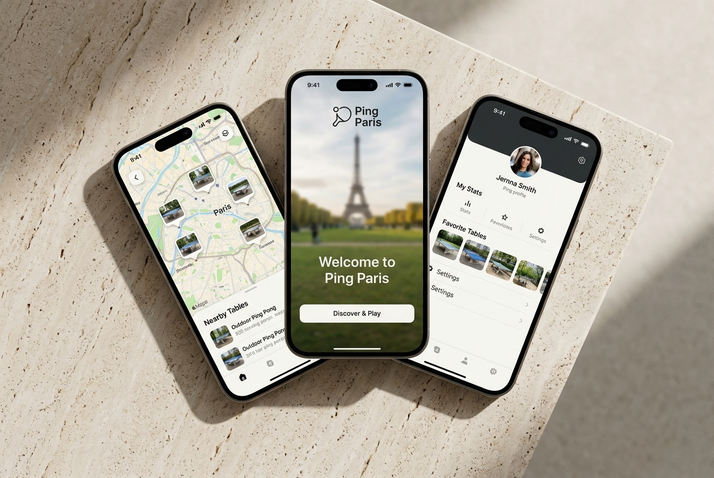

Ping
Paris
Application mobile pour localiser les tables de ping-pong à Paris, consulter la météo, trouver les spots proches et créer une expérience communautaire.

Role
Design UI, intégration web, prototype, déploiement
Stack
HTML, CSS, JavaScript, React CDN, Leaflet, Open-Meteo API, PWA
Objectif
Trouver rapidement une table de ping-pong autour de soi à Paris.
Statut
Prototype fonctionnel en cours d’amélioration.
Le problème
Il existe de nombreuses tables de ping-pong à Paris, mais elles sont dispersées, parfois difficiles à localiser et rarement présentées dans une interface claire et mobile.
La solution
Ping Paris centralise les spots sur une carte interactive avec géolocalisation, météo en temps réel, fiches détaillées, recherche et navigation mobile.
Fonctionnalités
Géolocalisation
Trouver les tables proches de l’utilisateur.
Carte interactive
Pins Leaflet, fiches spots et navigation Google Maps.
Météo API
Connexion à Open-Meteo pour afficher les conditions de jeu.
Ce que ça montre
Ce projet montre ma capacité à transformer une idée produit en prototype interactif : structure d’application, interface mobile, carte dynamique, API externe, logique de navigation, déploiement web et version installable en PWA.